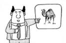

Several years ago I worked in a company where non-engineering staff could see everything in the bugs database. A colleague, let us call her M., who was the SVP of Marketing, approached me: "John, why haven't you fixed Bug 2050?" Me: "I don't think it's been assigned to me." M.: "Well, it's really important, and I don't understand why the priority has been marked as low, or why the estimate says 2 hours. It's just a word change." Me: "ummm, can I get back to you?" M.: "And why does the comment say, 'this is just a cosmetic detail for M., but it's buried in the dynamic image routine, so we should bundle it with other changes in that area.' John, it's a lot more than a cosmetic change." I know M.'s motivation: She was trying to do her job. But because of her insight into the bugs database, we were probably slowing her down (because she was spending time browsing it), and she wasn't playing the project management game. Which leads me to . . .
(photo from http://www.digitalapoptosis.com/archives/costa_rica/000583.html) Q1: Should management have access to the bugs database? A1: It depends.
The answer to all project management questions is "it depends," know ye not that? So I'm being a bit facetious in my answer. Here's another version that provides as little information but is perhaps better phrased and the answer that I will draw out in what follows:
A1: The more the culture of a manager is like the culture of the developers, the more access that manager should have to the bugs database.
Now in this answer I've used the singular with the manager and the plural with the developers. In my experience, the developers do have something of a shared culture, while the managers are at various degrees of difference to the developers. So each manager needs to be considered separately. By "managers," I am thinking about sales and marketing, as well as VPs and above, including the CEO. The project and product managers are, from this perspective, developers: They need full access to the bugs database so that they can translate to the non-developers.
Incidentally, by "bug," I mean any developer "to do," be it a task associated with a new feature, or a system management job, or an actual bug fix. The bugs database I'm talking about it is that which manages developer work. There may be other important things in the bugs database: For instance, the product manager may store feature descriptions or requirements in the database, which ultimately are aggregations of todos (i.e., bugs, i.e., things developers must do). But these are not bugs; they are at the manifold between developers and management. One thing I won't discuss here is bug management by CRC cards and the like, which are commonly on view in the developer offices; when CRC cards are on display to non-developers, they will have a different tone compared to cards that live only within developer world.
And why would this ever come up? At some point in your project or company's development, someone will say: Wouldn't it be convenient to let marketing know where the project is by giving them access to the bugs database? Or, it might come to pass that someone suggests that marketing should be able to add stuff to the bugs database on their own, thus eliminating any filtering provided by those who are in charge of development. I have seen this in some form in about half of all of the projects I've been involved with.
In any case, why is this an important question? The reason is that on your development team, the developers need to be brutally honest with themselves and with each other in the bugs database. They need to be honest about their emotions, and about their facts. Emotions first: Good software for managing bugs includes comments, and on occasion developers need to say sarcastic things about the person who submitted the bug, the customer, or another developer. Why? Because frequently items get into the bugs database that are not bugs (according to developer culture), and this semantic slippage drives a conversation in the bugs database. That conversation isn't about the bug per se, but a metacommentary on the very nature of bugs. If you don't know what I am talking about, then you are a manager and shouldn't have a login to the bugs database. You will mistake what the developers are saying as "mean" comments, or comments that are not positive and supportive of the company. Trust me, they are not mean: They are emerging from the developer collective unconscious, which transcends (or supports in the manner of a sewer system) all particular companies and institutions.
The metacommentary is special. In linguistics, there is something called the "phatic" dimension of language, which means statements that exist to perform a social task: You could argue that "um" is a phatic utterance, because it is saying: "I'm still here, I'm still talking, don't interrupt me . . ." The bugs meta-commentary is like that. It is the developers making small-talk that effectively says: "I am a developer." To be sure, there might actually be content in the meta-commentary, but its phatic dimension is crucial.
Another important element in a good bugs database is an estimate for each bug, and a hierachy between particular bugs and various higher-level components. On the estimates side, you can't plan if people aren't honest. It can happen that if someone in marketing or sales knew the true estimate for a bug, that person would panic. What needs to happen in this case is that the customer representative / product owner, who is an honorary member of developer culture, must know the estimate so that, if the estimate exceeds the time allowed, a different kind of fix can be imagined or the scope of the bug and/or its fix can be altered. Scrum has this correct through its division of the participants in the product development process: Obviously stakeholders need to know exactly where the project is: But they need to know it in a language they understand, with options. (Some of the developer attitude comes through in Scrum slang: pig roles, chicken roles, etc.) Those options come from studying the real estimates, and then coming up with alternatives. But the baseline for this discussion has to be honesty, the kind that can be very disturbing to stakeholders -- unless, of course, they participate in developer culture and already know that the estimate is subject to alteration on the basis of changing the bug itself or the scope of the fix.
So . . . having said this, my conclusion is that managers who are far from developer culture should not have access to the bugs database. They should not be able to add items to the bugs database; they should not be able to add commentary; they should certainly not be able to see, or worse, change estimates. All reports from and modifications to the bugs database should be carried out through an intermediary, such as the project or product manager, who can identify suggestions as duplicates, and/or respond to stakeholder needs in terms of speeding up the schedule (read: de-scoping what is to be done).

You can also run this in reverse: Is your CEO still a techie, deserving of exposure to the developer mishnah? Judge him or her by use of the bugs database. If the CEO has access to the bugs database, and takes offense at the meta-commentary, he is no longer a part of developer culture, and should be banned. If the CEO tweaks an estimate without consulting the project and/or product managers, again, that CEO has migrated away from developer culture, and should be banned. It will be better for the CEO, too: Clearly he or she needs to be updated about project velocity in a language that fits CEO prerogatives better . . . raw exposure to developer world is going to be counter-productive.
Some readers will feel that user-contributed tickets should be managed by the same software; i.e., that there is "input" to the bugs database that should be untranslated, or that should be managed by those in charge of customer communications, typically people from marketing. If the bugs software maintains a categorical wall between user-submitted tickets and actual bugs, then I think that's ok; otherwise, such submissions from the real world need to be triaged by project and product managers just like everything else.
*Disclaimer: No similarities to living or dead developers, bug databases, project managers, product managers, scrum masters, CEOs, VPs, sales and marketing staff, are intended or implied. *